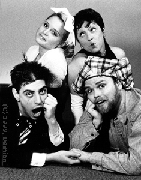

writer, director
Our Old Gang Grows Up
A Vaudeville Romp
|
A sweet and silly piece of vaudeville based on the childhood gang, now matured into their teens. When Karla leaves the boys alone, Hanky and Alf confess they love each other. Karla runs into her screen idol, Betty Boo, at the supermarket and the two women consider getting romantically involved. The discomfort of shifting allegiances provokes a battle between the males and females. All ends well as they encourage the audience to sing along with “I’m in the Mood for Love.”
 Gregory Wolfson (Alf), A. Nile Baird, Jr. (Hanky), Maria Issacs (Karla), Marlane Balcom (Betty Boo)
 Maria Issacs (Karla), Marlane Balcom (Betty Boo) Gregory Wolfson (Alf), A. Nile Baird, Jr. (Hanky)
The play was commissioned by, and premiered at, the Gay Theater Festival in Seattle in June 1985. It was re-written in October 2001. |
All contents © 2003, Demian
|
To Demian’s: Directing Résumé Acting Résumé | Back to: Sweet Corn Productions |
|
Demian Sweet Corn Productions Box 9685, Seattle, WA 98109-0685 206-935-1206 demian@buddybuddy.com www.buddybuddy.com/sweet.html |